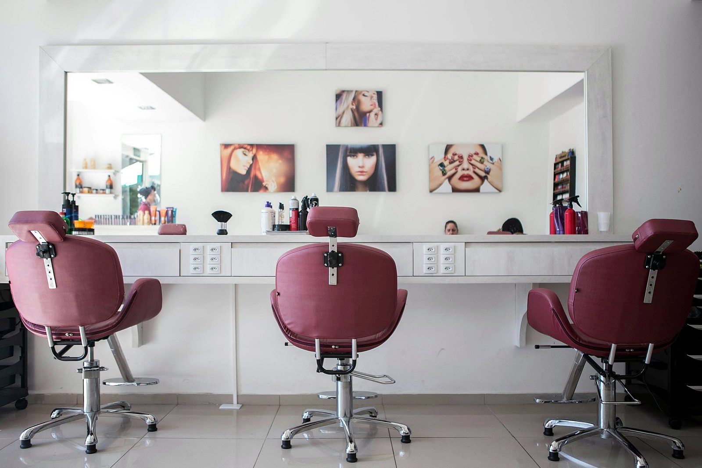

The KuuStore blog
Plain answers about nails, brows and the people who care for them, written for South Florida first and useful anywhere.



KUU means Keep U'r Uniqueness. Mobile beauty and care in South Florida, with 70% of every payment going to your technician.
Plain answers about nails, brows and the people who care for them, written for South Florida first and useful anywhere.
